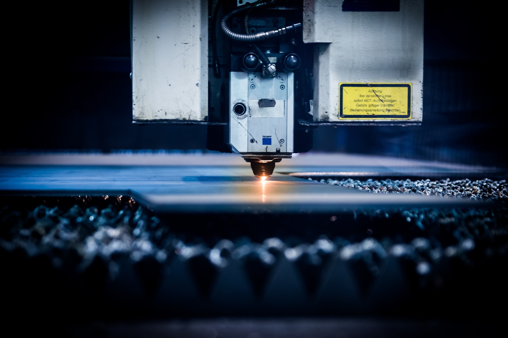
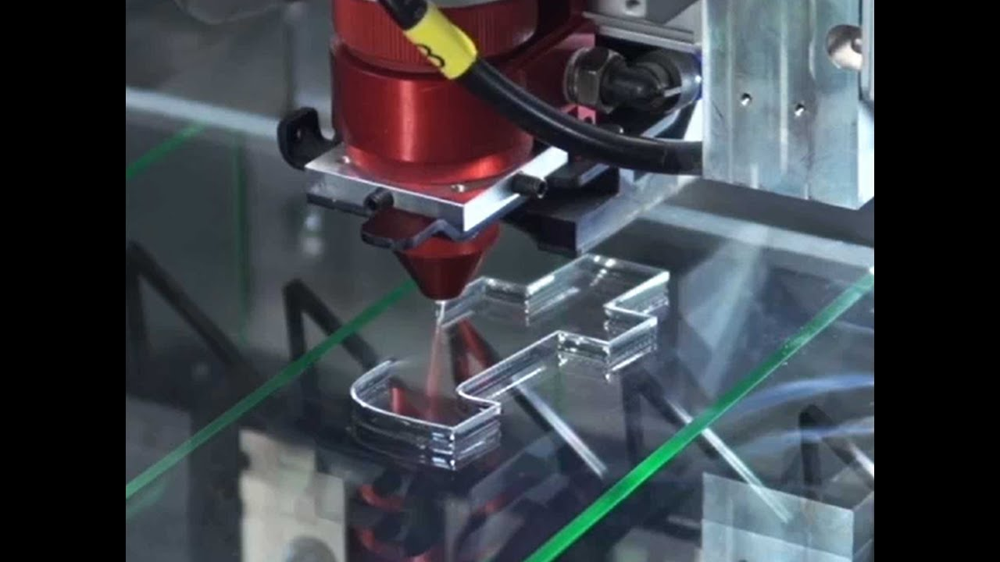
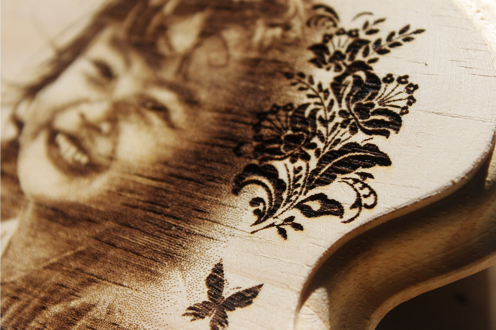

Explore cutting
Tierea pe metal
Taierea metalului cu ajutorul laserului este cea mai raspandita optiune de care se folosesc companiile, deoarece costurile sunt relativ mici, iar rezultatul este foarte exact din punct de vedere tehnic. Cu toate acestea, anumite materiale au proprietăți care fac reacția lor la laser mai complexă: de exemplu argintul și cuprul datorită proprietăților lor reflexive. Este întotdeauna important să calificați adecvarea dintre laser și material.
Tierea pe plastic
Gravare cu laser, este practica utilizării lasere la grava un obiect. Marcare laserpe de altă parte, este o categorie mai largă de metode de a lăsa urme pe un obiect, care include și schimbarea culorii datorită alterării chimice / moleculare, carbonizare, spumare, topire, ablație și multe altele. Tehnica nu implică utilizarea cernelurilor și nici nu implică biți de scule care intră în contact cu suprafața de gravură și se uzează, oferindu-i un avantaj față de tehnologiile alternative de gravare sau marcare în care cernelurile sau capetele de biți trebuie înlocuite în mod regulat.
Tierea pe lemn
Lemnul este cel mai moale material din cele enumerate, dar necatand la acest fapt Atunci când utilizați un laser pentru perforarea materialelor, este recomandabil să mențineți un raport de proporționalitate egal între diametrul perforației și grosimea materialului.